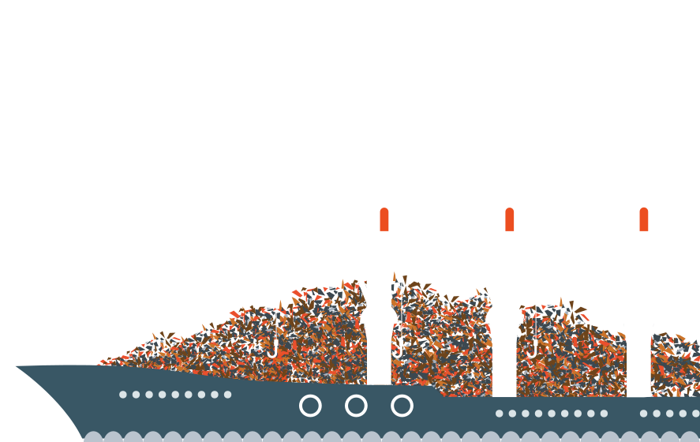

Scrap Metal
Recyclers.
Baltimore, Maryland
Est. 1991.
Baltimore Scrap Corp. is a Maryland-based scrap metal recycling company with locations in Baltimore, Dundalk, and Upper Marlboro.
The company and its affiliates are owned by the Simon family, who proudly traces their roots in the industry to 1916. The four family members and owners of Baltimore Scrap have over 130 years of combined experience in the recycling business.
Baltimore Scrap Corp. and its affiliates throughout Pennsylvania, New York, New Jersey, and Virginia provide fair pricing, timely service and direct access to steel mills globally, which allows us to enjoy a competitive advantage over other recycling companies in the region.
Our companies ship our final products to consumers in North America via truck, rail, and barge, and via bulk cargoes and containers overseas. Despite the ups and downs of the economy and the scrap metal recycling industry, our financial strength and experience enables us to always buy scrap from our customers with prompt payment.
Baltimore Scrap Corp. and our capable and friendly employees are always ready to meet your recycling needs.
Baltimore Scrap Corp.
Purchases scrap metal from industry, government, auto salvage yards, demolition contractors, and farms, as well as from the general public.
For the collection of customer material, roll-off containers of various sizes, including:
- Roll-off containers from 20-50 cubic yards
- 90 cubic yard dump trailers
- Flat bed trailers
- Car trailers
Capabilities include processing most ferrous material through the utilization of a heavy duty auto shredder, mobile shears, and torch cutting.
Please call 410-355-4455 or email for current pricing and any questions concerning acceptable and unacceptable materials.
Our Locations.
Baltimore Scrap Corp
3000 Vera StreetBaltimore, MD 21226
410-355-4455
Hours: Mon-Fri: 6:30am-3:30pm
Industrial Metal Recycling
9304 Darcy RoadUpper Marlboro, MD 20774
301-499-4129
Hours: Mon-Fri: 7:00am-4:00pm
North Point Recycling
2723 North Point BlvdDundalk, MD 21226
410-284-7000
Hours: Mon-Fri: 8:00am-4:30pm
Pennsylvania
Coatesville Scrap Iron & Metal Co
1000 South 1st AvenueCoatesville, PA 19320
610-384-9230
Contact Baltimore Scrap Corp.
David Simon
President and Scrap Sales
Joseph Simon
Vice President / GM
Michael Lupco
Operations Manager
Dana Cox
Weigh-master / Dispatcher
BSC is proud to be an active and consistent participant in various community outreach and youth initiative programs such as our long time sponsorship of the Baltimore/Curtis Bay Rec Center, Summer Camp for Children. Our involvement with both the South Baltimore Business Alliance and the Westphalia Sector Community Council reinforces our commitment to rigorous community participation.

Proud member of
Institute of Scrap Recycling IndustriesSouth Baltimore Business Alliance
© 2015 Baltimore Scrap Corp. Design by Chulado


- 